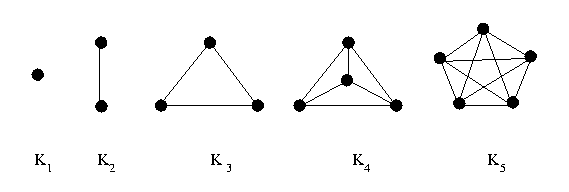

<!-- Generated template for the LerPropriedadesDoGrafoCompletoComponent component -->
<div>
    <ion-card text-justify>  
        <ion-card-content>
            Um grafo completo é um grafo simples em que 
            todo vértice é adjacente a todos os outros vértices. 
            O grafo completo 
            de  <ng-katex equation= "n"></ng-katex>   vértices é frequentemente denotado por
              <ng-katex equation= "K_n"></ng-katex>.
              
          <br>
          <h2>Número de arestas</h2>
          Grafos dessa natureza tem  <ng-katex equation= "|E| = n(n-1)/2 "></ng-katex> 
        </ion-card-content>
      </ion-card>
</div>
